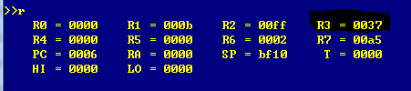

Clipped picture of Solution to the first Problem.

Clipped picture of Solution to the second Problem.Because the loop technique cannot be used on the term program, I generate the loop explicitly with external scripts to print printable acsii code to the terminal.
Clipped picture of Solution to the Third Problem.This program adds 1+2+3..+10,and saves the result to r3=0x37.
Assembly Codes of the three problems can be checked by opening Coding.txt.